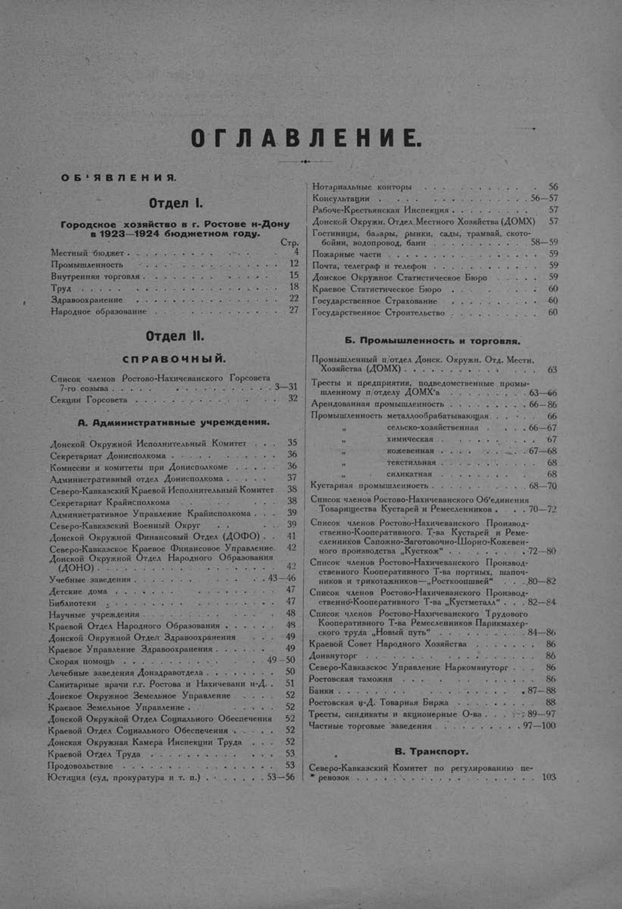

Лист источника 537
Скан

Распознанный текст
ОГЛАВЛЕНИЕ.
ОБ'ЯВЛЕНИЯ.
Отдел I.
Городское хозяйство в г. Ростове н-Дону
в 1923—1924 бюджетном году.
Стр.
Местный бюджет . . . . . . . . . . . . . . . . . . . 4
Промышленность . . . . . . . . . . . . . . . . . 12
Внутренняя торговля . . . . . . . . . . . . . . . 15
Труд . . . . . . . . . . . . . . . . . . . . . . . . . 18
Здравоохранение . . . . . . . . . . . . . . . . . 22
Народное образование . . . . . . . . . . . . . 27
Отдел II.
СПРАВОЧНЫЙ.
Список членов Ростово-Нахичеванского Горсовета
7-го созыва . . . . . . . . . . . . . . . . . . . . . 3—31
Секции Горсовета . . . . . . . . . . . . . . . . . . 32
А. Административные учреждения.
Донской Окружной Исполнительный Комитет . . . 35
Секретариат Донисполкома . . . . . . . . . . . . 36
Комиссии и комитеты при Донисполкоме . . . . 36
Административный отдел Донисполкома . . . . . 37
Северо-Кавказский Краевой Исполнительный Комитет 38
Секретариат Крайисполкома . . . . . . . . . . . 38
Административное Управление Крайисполкома . . 39
Северо-Кавказский Военный Округ . . . . . . . . 39
Донской Окружной Финансовый Отдел (ДОФО) . . 41
Северо-Кавказское Краевое Финансовое Управление. 42
Донской Окружной Отдел Народного Образования
(ДОНО) . . . . . . . . . . . . . . . . . . . . . . 42
Учебные заведения . . . . . . . . . . . . . . . . 43—46
Детские дома . . . . . . . . . . . . . . . . . . . . 47
Библиотеки . . . . . . . . . . . . . . . . . . . . . 47
Научные учреждения . . . . . . . . . . . . . . . . 48
Краевой Отдел Народного Образования . . . . . 48
Донской Окружной Отдел Здравоохранения . . . 49
Краевое Управление Здравоохранения . . . . . . 49
Скорая помощь . . . . . . . . . . . . . . . . . . . 49—50
Лечебные заведения Донздравотдела . . . . . . . 50
Санитарные врачи г.г. Ростова и Нахичевани н-Д. . 51
Донское Окружное Земельное Управление . . . . 52
Краевое Земельное Управление . . . . . . . . . . 52
Донской Окружной Отдел Социального Обеспечения 52
Краевой Отдел Социального Обеспечения . . . . 52
Донская Окружная Камера Инспекции Труда . . 52
Краевой Отдел Труда . . . . . . . . . . . . . . . 53
Продовольствие . . . . . . . . . . . . . . . . . . 53
Юстиция (суд, прокуратура и т. п.) . . . . . . . 53—56
Нотариальные конторы . . . . . . . . . . . . . . 56
Консультации . . . . . . . . . . . . . . . . . . . 56—57
Рабоче-Крестьянская Инспекция . . . . . . . . . . 57
Донской Окружн. Отдел Местного Хозяйства (ДОМХ) 57
Гостиницы, базары, рынки, сады, трамвай, ското-
бойни, водопровод, бани . . . . . . . . . . 58—59
Пожарные части . . . . . . . . . . . . . . . . . 59
Почта, телеграф и телефон . . . . . . . . . . . . 59
Донское Окружное Статистическое Бюро . . . . 59
Краевое Статистическое Бюро . . . . . . . . . . 60
Государственное Страхование . . . . . . . . . . 60
Государственное Строительство . . . . . . . . . 60
Б. Промышленность и торговля.
Промышленный п/отдел Донск. Окружн. Отд. Местн.
Хозяйства (ДОМХ) . . . . . . . . . . . . . . . . 63
Тресты и предприятия, подведомственные промы-
шленному п/отделу ДОМХ'а . . . . . . . . . 63—66
Арендованная промышленность . . . . . . . . . 66—86
Промышленность металлообрабатывающая . . . 66
„ сельско-хозяйственная . . . 66—67
„ химическая . . . . . . . . 67
„ кожевенная . . . . . . . . 67—68
„ текстильная . . . . . . . . 68
„ силикатная . . . . . . . . 68
Кустарная промышленность . . . . . . . . . . . 68—70
Список членов Ростово-Нахичеванского Об'единения
Товарищества Кустарей и Ремесленников . . . . 70—72
Список членов Ростово-Нахичеванского Производ-
ственно-Кооперативного Т-ва Кустарей и Реме-
сленников Сапожно-Заготовочно-Шорно-Кожевен-
ного производства „Кусткож“ . . . . . . . . .72—80
Список членов Ростово-Нахичеванского Производ-
ственного Кооперативного Т-ва портных, шапоч-
ников и трикотажников—„Росткоопшвей“ . . . .80—82
Список членов Ростово-Нахичеванского Производ-
ственно-Кооперативного Т-ва „Кустметалл“ . . . 82—84
Список членов Ростово-Нахичеванского Трудового
Кооперативного Т-ва Ремесленников Парикмахер-
ского труда „Новый путь“ . . . . . . . . . . 84—86
Краевой Совет Народного Хозяйства . . . . . . 86
Донвнуторг . . . . . . . . . . . . . . . . . . . . 86
Северо-Кавказское Управление Наркомвнуторг . . 86
Ростовская таможня . . . . . . . . . . . . . . . . 86
Банки . . . . . . . . . . . . . . . . . . . . . . . 87—88
Ростовская н-Д. Товарная Биржа . . . . . . . . 88
Тресты, синдикаты и акционерные О-ва . . . . . 89—97
Частные торговые заведения . . . . . . . . . . . 97—100
В. Транспорт.
Северо-Кавказский Комитет по регулированию пе-
ревозок . . . . . . . . . . . . . . . . . . . . . . 103